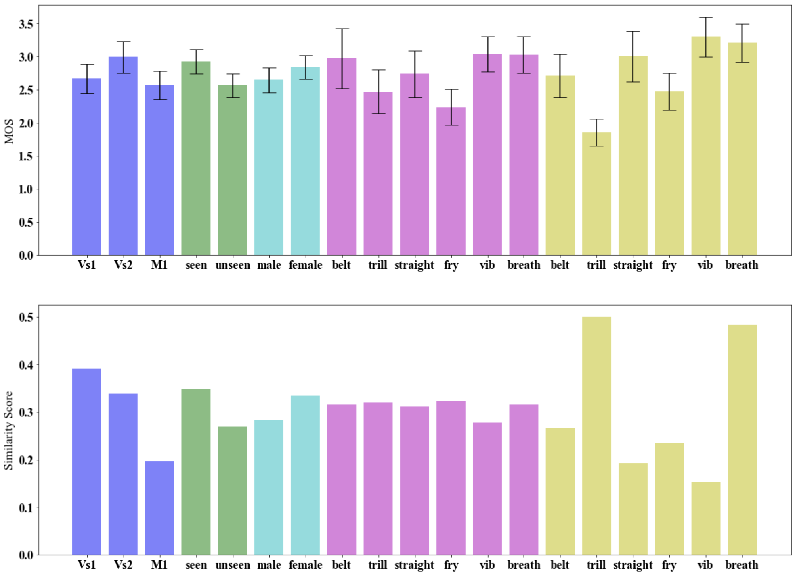

This page presents the results and stimuli used in our research on singing technique transformation, as detailed in our CMMR 2021 paper, Zero-shot Singing Technique Conversion. Directly below are the results of our listening study.
To illustrate the upperbound quality of our generated audio snippets, the table below presents original audio recordings in the left column, while the right column presents the same recording (without a converted singing technique) when resynthesized using the pretrained Wavenet vocoder. This demonstrates the artefacts and deterioration due to resynthesis alone, and therefore provides an indication of the upperbound audio quality in this context:
The audio files presented here have been generated by the neural network AutoSTC. When generating new audio, we used an averaged embedding (of multiple singing examples for the chosen target technique) for conditioning. Target technique recordings were not directly used for inference, and therefore only examples of these singing techniques are illustrated in this demo.
The following tables table below presents the generated results (column 3) of the Vs1 model (which was trained only on the VocalSet dataset), accompanied with the original input audio (column 1) and an example of the target singing technique (column 2):
This table presents the generated results (column 3) of the Vs2 model (which was trained on all three datasets using the path optimised for VocalSet), accompanied with the original input audio (column 1) and an example of the target singing technique (column 2):
This table presents the generated results (column 3) of the M1 model (which was trained on all three datasets using the path optimised for MedleyDB), accompanied with the original input audio (column 1) and an example of the target singing technique (column 2):